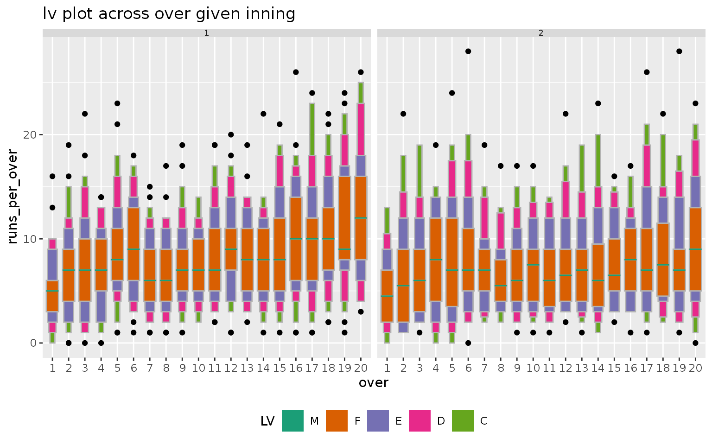
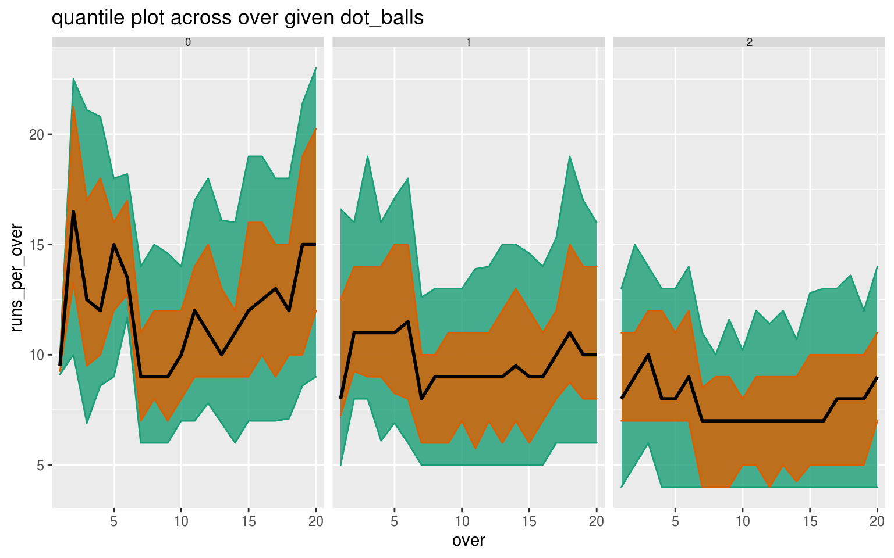
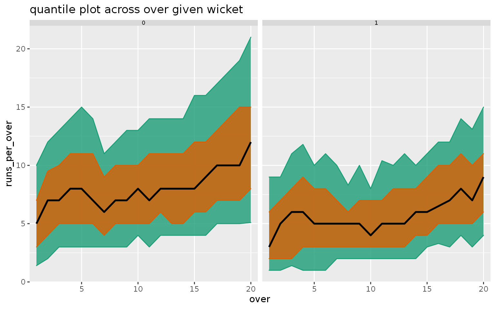

vignettes/cricket.Rmd
cricket.RmdPackage gravitas is not only restricted to temporal data. An application on cricket follows to illustrate how this package can be generalized in other applications.
The Indian Premier League (IPL) is a professional Twenty20 cricket league in India contested by teams representing different cities in India. In a Twenty20 game, the two teams have a single innings each, which is restricted to a maximum of 20 overs. Hence, in this format of cricket, a match will consist of 2 innings, an innings will consist of 20 overs, an over will consist of 6 balls. Therefore, a hierarchy can be construed for this game format.
The ball by ball data for IPL season is sourced from Kaggle. The cricket data set in the gravitas package summarizes the ball-by-ball data cross overs and contains information for a sample of 214 matches spanning 9 seasons (2008 to 2016).
library(gravitas)
library(tibble)
glimpse(cricket)
#> Observations: 8,560
#> Variables: 10
#> $ season <dbl> 2008, 2008, 2008, 2008, 2008, 2008, 2008, 2008, 2008, 2…
#> $ match_id <dbl> 2, 2, 2, 2, 2, 2, 2, 2, 2, 2, 2, 2, 2, 2, 2, 2, 2, 2, 2…
#> $ batting_team <chr> "Chennai Super Kings", "Chennai Super Kings", "Chennai …
#> $ bowling_team <chr> "Kings XI Punjab", "Kings XI Punjab", "Kings XI Punjab"…
#> $ inning <dbl> 1, 1, 1, 1, 1, 1, 1, 1, 1, 1, 1, 1, 1, 1, 1, 1, 1, 1, 1…
#> $ over <dbl> 1, 2, 3, 4, 5, 6, 7, 8, 9, 10, 11, 12, 13, 14, 15, 16, …
#> $ wicket <dbl> 0, 0, 1, 0, 0, 0, 1, 1, 0, 0, 0, 0, 1, 0, 0, 1, 0, 0, 0…
#> $ dot_balls <dbl> 4, 2, 4, 3, 3, 3, 1, 3, 1, 2, 1, 0, 2, 1, 0, 3, 0, 1, 0…
#> $ runs_per_over <dbl> 5, 14, 2, 6, 9, 11, 9, 8, 13, 5, 19, 20, 4, 10, 18, 8, …
#> $ run_rate <dbl> 1, 2, 0, 1, 2, 2, 2, 1, 2, 1, 3, 3, 1, 2, 3, 1, 2, 3, 2…Although there is no conventional time granularity in cricket, we can still represent the data set cricket through a tsibble, where each over, which represents an ordering from past to future, can form the index of the tsibble. The hierarchy table would look like the following:
hierarchy_model <- tibble::tibble(
units = c("index", "over", "inning", "match"),
convert_fct = c(1, 20, 2, 1))
knitr::kable(hierarchy_model, format = "markdown")| units | convert_fct |
|---|---|
| index | 1 |
| over | 20 |
| inning | 2 |
| match | 1 |
We filtered the data for two top teams in IPL - Mumbai Indians and Chennai Super Kings. Each inning of the match is plotted across facets and overs of the innings are plotted across the x-axis. It can be observed from the letter value plot that there is no clear upward shift in runs in the second innings as compared to the first innings. The variability of runs increases as the teams approach towards the end of the innings, as observed through the longer and more distinct letter values.
cricket_tsibble %>%
filter(batting_team %in% c("Mumbai Indians",
"Chennai Super Kings"))%>%
prob_plot("inning", "over",
hierarchy_model,
response = "runs_per_over",
plot_type = "lv")
A dot ball is a delivery bowled without any runs scored off it. The number of dot balls is reflective of the quality of bowling in the game. The number of wickets per over can be thought to be a measure of good fielding. It might be interesting to see how good fielding or bowling effect runs per over differently.
Now, the number of wickets/dot balls per over does not appear in the hierarchy table, but they can still be thought of as granularities since they are constructed for each index (over) of the tsibble. The relationship is not periodic because of the number of wickets that are dismissed or dot balls that are being bowled changes across overs. This is unlike the periodic relationship for units specified in the hierarchy table.
gran_advice is employed to check if it would be appropriate to plot wickets and dot balls across overs. The output suggests that the pairs (dot_balls, over) and (wicket, over) are clashes. It also gives us the number of observations per categorization. The number of observations of 2, 3 or 4 wickets are too few to plot a distribution, implying there are hardly any overs in which 2 or more wickets are dismissed. The number of observations for more than 5 dot balls in any over is again very low suggesting those are even rarer cases.
cricket_tsibble %>%
gran_advice("wicket",
"over",
hierarchy_model)
#> The chosen granularities are clashes.
#> Consider looking at harmony() to obtain possible harmonies
#>
#> Recommended plots are: violin lv quantile boxplot
#>
#> Number of observations are homogenous across facets
#>
#> Number of observations are homogenous within facets
#>
#> Cross tabulation of granularities :
#>
#> # A tibble: 20 x 6
#> over `0` `1` `2` `3` `4`
#> <fct> <dbl> <dbl> <dbl> <dbl> <dbl>
#> 1 1 355 67 6 0 0
#> 2 2 335 85 8 0 0
#> 3 3 335 85 8 0 0
#> 4 4 330 93 5 0 0
#> 5 5 328 95 5 0 0
#> 6 6 329 95 4 0 0
#> 7 7 346 79 3 0 0
#> 8 8 353 68 7 0 0
#> 9 9 323 99 6 0 0
#> 10 10 341 81 6 0 0
#> 11 11 320 97 11 0 0
#> 12 12 319 101 8 0 0
#> 13 13 322 100 6 0 0
#> 14 14 325 92 11 0 0
#> 15 15 291 126 9 2 0
#> 16 16 294 124 10 0 0
#> 17 17 268 141 17 2 0
#> 18 18 251 140 35 2 0
#> 19 19 242 140 43 3 0
#> 20 20 182 169 67 9 1cricket_tsibble %>%
gran_advice("dot_balls",
"over",
hierarchy_model)
#> The chosen granularities are clashes.
#> Consider looking at harmony() to obtain possible harmonies
#>
#> Recommended plots are: quantile
#>
#> Number of observations are homogenous across facets
#>
#> Number of observations are homogenous within facets
#>
#> Cross tabulation of granularities :
#>
#> # A tibble: 20 x 8
#> over `0` `1` `2` `3` `4` `5` `6`
#> <fct> <dbl> <dbl> <dbl> <dbl> <dbl> <dbl> <dbl>
#> 1 1 2 18 74 126 125 68 15
#> 2 2 6 38 80 133 105 57 9
#> 3 3 14 41 113 135 90 31 4
#> 4 4 17 62 114 124 80 25 6
#> 5 5 21 70 104 110 86 34 3
#> 6 6 20 66 111 125 76 24 6
#> 7 7 41 105 123 104 44 11 0
#> 8 8 53 105 129 82 44 15 0
#> 9 9 45 122 125 78 44 12 2
#> 10 10 52 141 109 83 35 7 1
#> 11 11 61 112 125 86 36 7 1
#> 12 12 69 137 117 71 27 7 0
#> 13 13 70 116 114 89 33 5 1
#> 14 14 62 134 114 81 22 14 1
#> 15 15 63 125 133 73 30 4 0
#> 16 16 80 148 121 49 20 9 1
#> 17 17 81 148 107 58 25 9 0
#> 18 18 72 128 145 57 24 2 0
#> 19 19 77 146 108 66 25 6 0
#> 20 20 72 141 117 62 29 6 1Hence, we filter our data set to retain those overs where the number of wickets or dot balls are less than, or equal to 2. Some pairs of granularities should still be analyzed with caution as suggested by gran_advice. Area quantile plots are drawn across overs of the innings, faceted by either number of dot balls (first) or the number of wickets (second). The dark black line represents the median, whereas the orange and green represent the area between the 25th and 75th percentile and between the 10th and 90th percentile respectively. For both the plots, runs per over decreases as we move from left to right, implying runs decreases as the number of dot balls or wickets increases.
Moreover, it seems like with zero or one wicket overs, there is still an upward trend in runs across overs of the innings, whereas the same is not true for dot balls more than 0 per over.
cricket_tsibble %>%
filter(dot_balls %in% c(0, 1, 2)) %>%
prob_plot("dot_balls",
"over",
hierarchy_model,
response = "runs_per_over",
plot_type = "quantile",
quantile_prob = c(0.1, 0.25, 0.5, 0.75, 0.9))
#> Warning in gran_warn(.data, gran1, gran2, hierarchy_tbl = hierarchy_tbl, : Some combinations of granularities have less than 30 observations.
#> Check gran_obs() to find combinations which have low observations.
#> Analyze the distribution of these combinations with caution.
cricket_tsibble %>%
filter(wicket %in% c(0, 1)) %>%
prob_plot("wicket",
"over",
hierarchy_model,
response = "runs_per_over",
plot_type = "quantile",
quantile_prob = c(0.1, 0.25, 0.5, 0.75, 0.9))